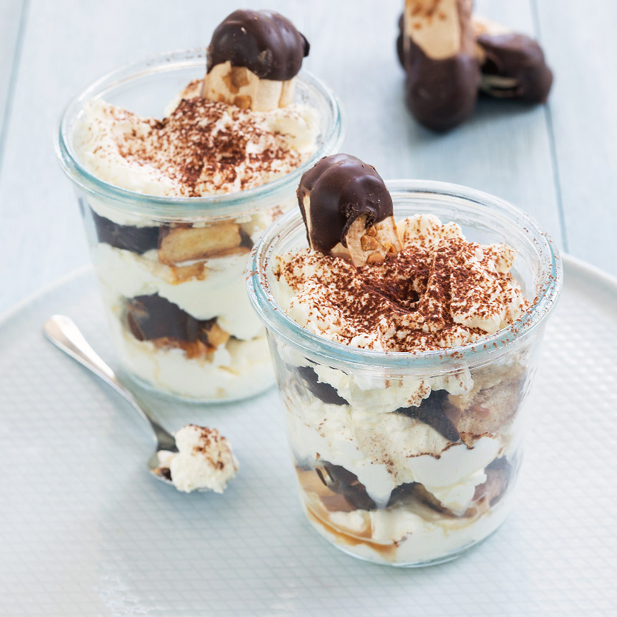

Bokkenpootjes tiramisu
Supersnel toetje met mascarponeroom met Bokkenpootjes in een glaasje, een lekkere en leuke variant op tiramisu
Ingrediënten
- 1 pak bokkenpootjes
- 250 gr mascarpone
- 125 ml slagroom
- 1 zakje vanillesuiker
- 1 eetlepel cacao
- 1 kopje koffie
- Optioneel: scheutje Amaretto
Bereidingswijze
- Laat de koffie afkoelen in een diep bord of in een kommetje. Voeg eventueel een scheutje Amaretto toe. Mix de mascarpone met de slagroom en de vanillesuiker stijf. Verdeel een beetje van de room over de bodem van de glaasjes.
- Breek de bokkenpootjes in drieën of tweeen. Doop een paar stukken ca 1 seconden in de koffie en verdeel over de room in de glaasjes. Herhaal deze lagen nog een keer. Eindig met een laagje room en zeef hier een beetje cacao over.
- Steek aan de bovenzijde een half Bokkenpootje in de room. Serveer de Bokkenpootjes tiramisu direct of bewaar hem in de koelkast. Een hele nacht kan ook maar dan bestaat wel de kans dat de bokkenpootjes zachter worden.

Tip Maak ook een keer bokkenpootjestaart